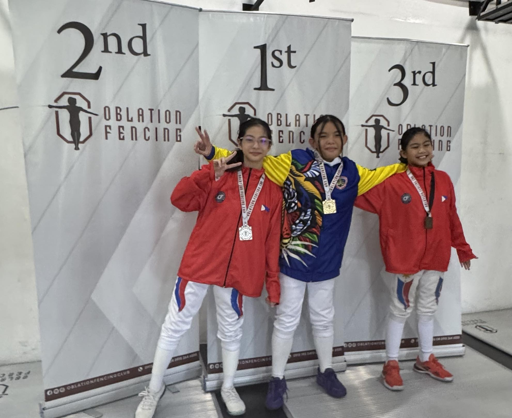
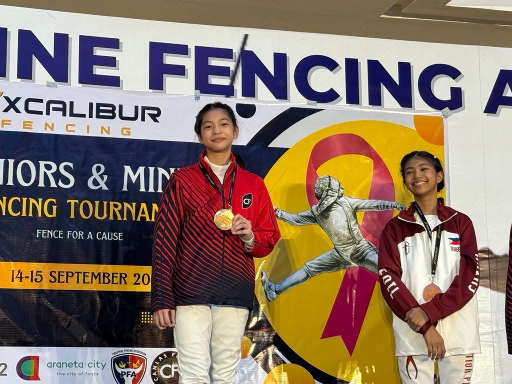

<!DOCTYPE html>
<html lang="en">
<head>
    <meta charset="UTF-8">
    <meta name="viewport" content="width=device-width, initial-scale=1.0">
    <title>Document</title>
    <style>
        img {
width: 60%;
height: 50%;
        }
        body {
            background-color: #f6efdc;
        }
    </style>
</head>
<body> 
    
</body>
</html>
<H1>Mary Chiara Layne N. Guidote</H1>
<h1><i>My story</i></h1>
<br>
<br>
</h2><i><b>My story of what hardwork feels like</i></h2></b>
</br>
<i><b>My story well my ongoing story, i have a goals to still complete but my story is how me Chiara guidote is training trying to reach the international podium. 
    everyone is fighting and training to reach the olympic podium that feeling to earn your medal by years of hardwork. I however didnt reach that many years
i try my best every competition hoping to get a medal or medals. But lets talk about how i love the sport which is fencing if i hadnt mentioned, when i first 
felt the grip of a sword was canada when i was 10 we found an activity to do during the weekends thats when i knew i loved fencing. i went back home in the 
philippines thats when i looked for a club that was near, i continued long enough to convince me to go competitive. i competed for many competitions and i was 
getting all bronze but i wanted more so i moved to a different club that held the olympians so i improve to earn my first gold  </i></b>
<br>
<br>

<br>
<br>
<i><b>>i felt proud of myself but i hope to win more. I trained hard to win medals and these medals feel like proof youre improving throughout and that pride of training
so hard, all that hard work people who are athletes can say that all that hardwork paid off to where i am right now.</i></b>
<br>
<br>

<br>
<i><b>i hope to win more but i always think what happens if i just quit right here right now? will my life have less value? but i wont get in the way real athletes will 
say that they will die for their dreams. Not much people dont get it when they see an athlete on the podium, the podium reflects the award but it doesnt show all that 
hard work you did. you have to earn it to win it to get that medal. all of the players are either happy or sad in the competition best is to stay poker face 
you have to stay serious the only time you will celebrate is after the competition. </i></b>
<br>
<i> i hope this encourages you in a way or makes you motivated but always work harder as an athlete</i>
<br>

<br>